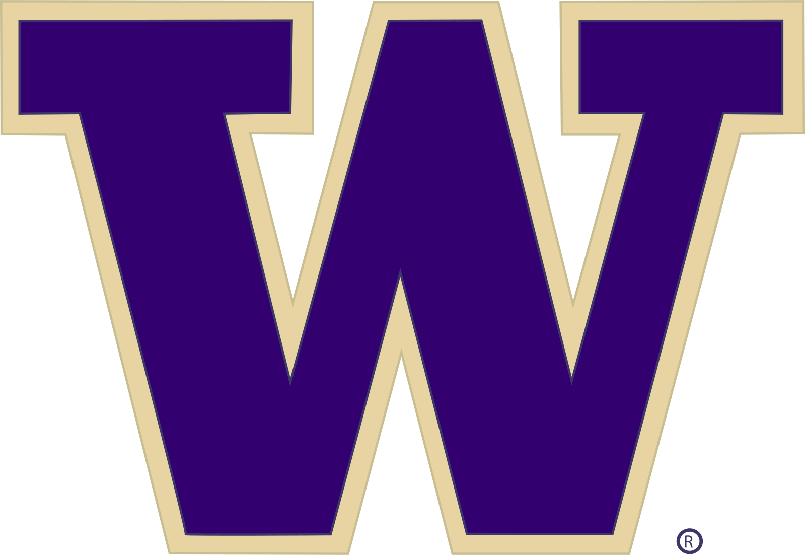

University of Washington

Role: Student Associate at Career Center @Engineering
Duration: October 2024 - Present
Responsibilities:
- Provide career guidance to students through resume reviews and dynamic presentations on professional development topics like networking and personal branding.
- Lead interactive workshops to teach students how to excel at career fairs and craft compelling resumes.
- Plan and manage career fairs, ensuring smooth logistical execution and effective communication.
- Maintain ongoing communication with students and employers through emails, keeping them informed and engaged.